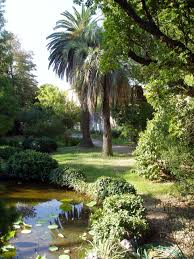
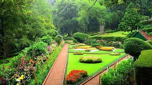
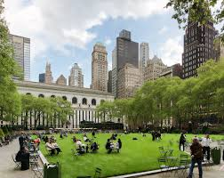
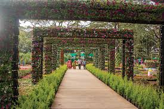
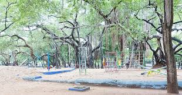
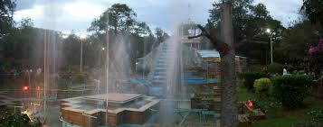
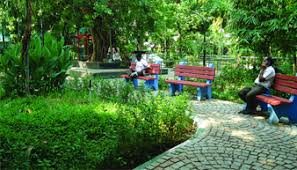
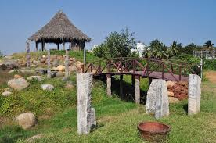
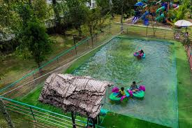

Government Botanical Garden
Ooty

Sim's Park
Coonoor

Bryant Park
Kodaikanal

Anna Nagar Tower Park
Chennai

Semmozhi Poonga
Chennai

Children's Park
Guindy, Chennai

VOC Park and Zoo
Coimbatore

Jeeva Park
T. Nagar, Chennai

Tholkappia Poonga (Eco Park)
Adyar, Chennai

Rose Garden
Ooty